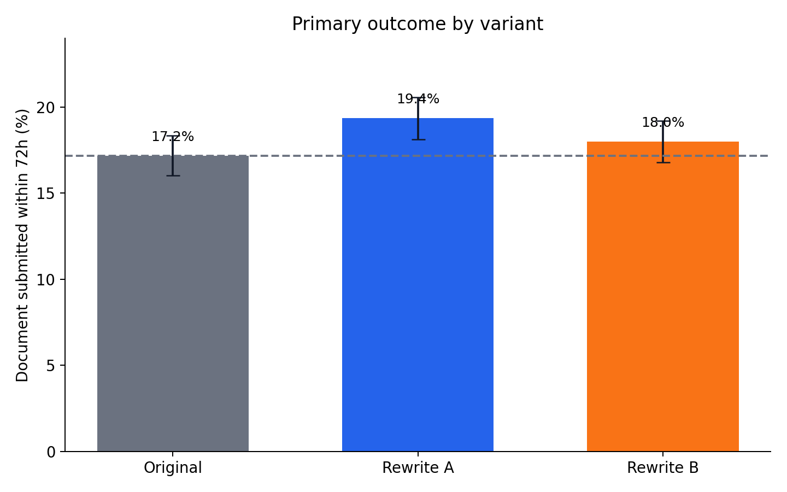
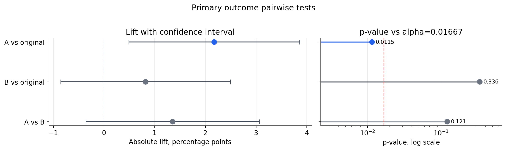
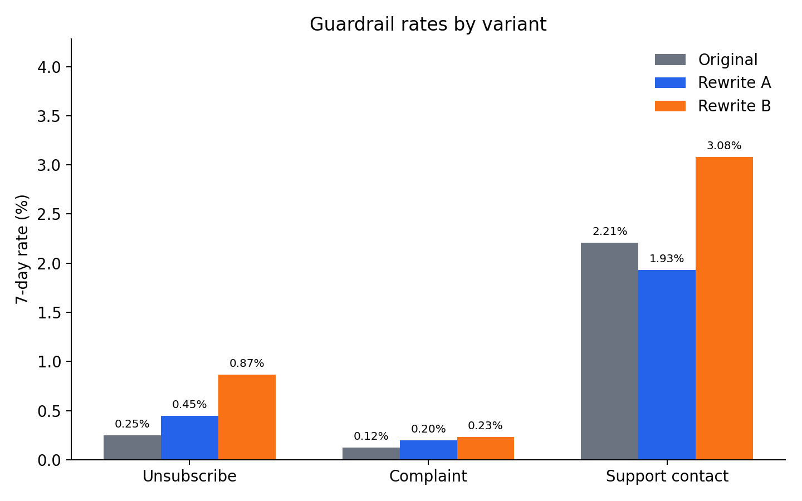
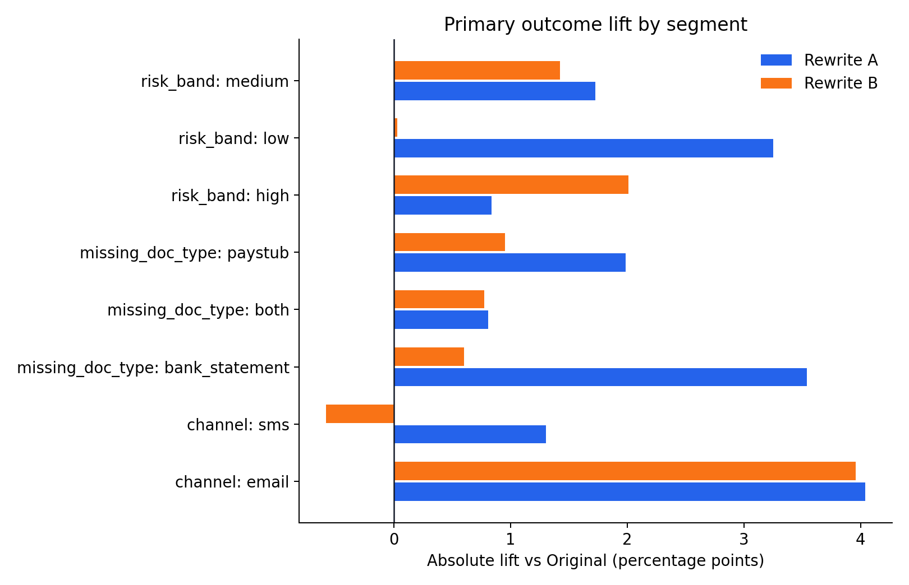
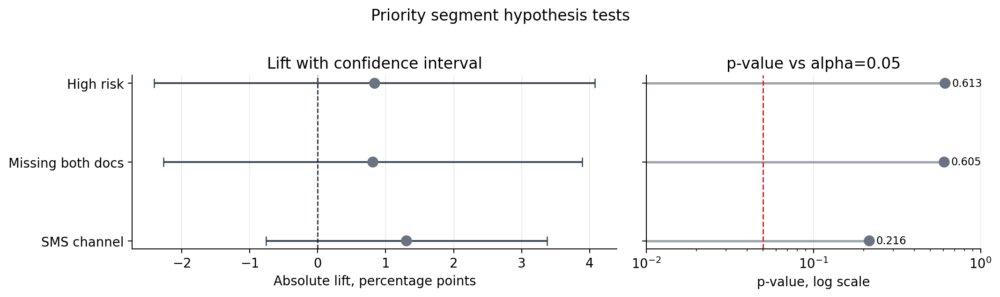

Lending Message A/B Test Output Report
Part A experiment analysis and Part B recommendation for the lending outreach message test.
Recommendation: roll out Rewrite A with guardrail monitoring.
Rewrite A improves the primary outcome from 17.18% to 19.36%, a +2.17 percentage-point absolute lift and +12.65% relative lift versus Original. Rewrite B is weaker on the primary outcome and worse on guardrails.
Primary Outcome
The primary outcome is doc_submitted_72h, because the business goal is to get applicants to submit missing income documents, not only to click or respond.

| Variant | Randomized n | Submitted docs | Rate | Abs. lift vs Original | Rel. lift vs Original |
|---|---|---|---|---|---|
| Original | 4,033 | 693 | 17.18% | +0.00 pp | 0.00% |
| Rewrite A | 4,040 | 782 | 19.36% | +2.17 pp | 12.65% |
| Rewrite B | 3,927 | 707 | 18.00% | +0.82 pp | 4.77% |
Hypothesis Tests
Primary pairwise tests use a Bonferroni adjustment across the three planned primary-outcome comparisons. Guardrail and segment tests are treated as diagnostic and directional.

| Comparison | Abs. lift | 95% CI | p-value | Bonferroni p-value |
|---|---|---|---|---|
| A vs original | +2.17 pp | +0.49 pp to +3.86 pp | 0.0115 | 0.0346 |
| B vs original | +0.82 pp | -0.85 pp to +2.49 pp | 0.3365 | 1.0000 |
| A vs B | +1.35 pp | -0.36 pp to +3.06 pp | 0.1215 | 0.3644 |
Power Analysis
For the observed A vs Original effect, Cohen's h is 0.0563. Achieved power is 71.5% at alpha 0.05 and 55.3% at the Bonferroni-adjusted alpha of 0.0167.
Delivered-Only Sensitivity
The primary analysis uses all randomized applicants. This sensitivity check repeats the primary outcome analysis among delivered messages only.
| Variant | Delivered n | Submitted docs | Rate | Abs. lift vs Original | Rel. lift vs Original |
|---|---|---|---|---|---|
| Original | 3,957 | 693 | 17.51% | +0.00 pp | 0.00% |
| Rewrite A | 3,940 | 782 | 19.85% | +2.33 pp | 13.33% |
| Rewrite B | 3,843 | 707 | 18.40% | +0.88 pp | 5.05% |
| Comparison | Abs. lift | 95% CI | p-value | Bonferroni p-value |
|---|---|---|---|---|
| A vs original | +2.33 pp | +0.62 pp to +4.05 pp | 0.0078 | 0.0233 |
| B vs original | +0.88 pp | -0.82 pp to +2.59 pp | 0.3092 | 0.9276 |
| A vs B | +1.45 pp | -0.30 pp to +3.20 pp | 0.1038 | 0.3114 |
Guardrails
Rewrite A does not show a material guardrail issue. Rewrite B has directionally worse unsubscribe and support-contact rates.

| Variant | Unsubscribe rate | Complaint rate | Support contact rate |
|---|---|---|---|
| Original | 0.25% | 0.12% | 2.21% |
| Rewrite A | 0.45% | 0.20% | 1.93% |
| Rewrite B | 0.87% | 0.23% | 3.08% |
Segment Review
Rewrite A is directionally positive across the reviewed segments. The weaker A-lift watch areas are high-risk borrowers, applicants missing both document types, and SMS users.


Decision
Recommend Rewrite A as the winner. Roll it out with monitoring for unsubscribes, complaints, and support contacts. Treat segment-level results as directional because each subgroup has less sample than the full experiment.